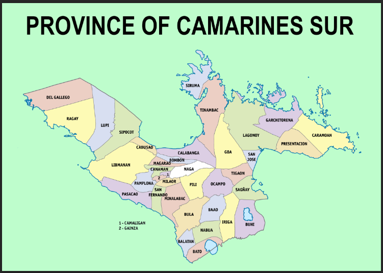
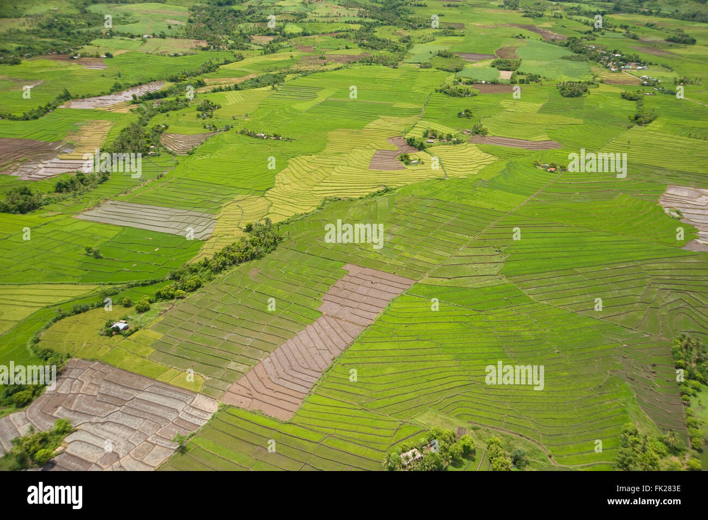
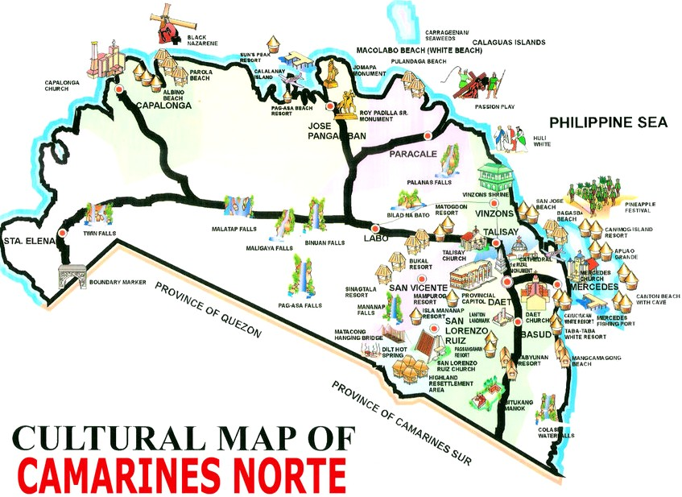

Camarines Sur or CamSur is a vibrant province in the Bicol Region known for its stunning islands,
lush mountains, and thrilling water sports. Home to the world-famous Caramoan Islands and the wakeboarding capital CWC,
it offers a perfect blend of adventure, nature, and culture. From serene lakes to lively festivals, CamSur is a destination
that captures the heart of every traveler.
ABOUT CAMARINES SUR

Camarines Sur is the largest province in the Bicol Region, located in southeastern Luzon, Philippines. Its capital is Pili, and its most urbanized city is Naga City, often called the "Heart of Bicol."

Image source: Juergen Freund/ Alamy Stock Photo
Date taken: 3 July 2008
Location:Camarines Sur, Bicol, Philippines
Camarines Sur was once inhabited by early settlers who practiced fishing, farming, and trading. The word "Camarines" comes from "camarín", a Spanish term for rice granaries, which were abundant when Spaniards arrived.
Photo from the minor basilica of Our Lady of Peñafrancia
The province was established in the 1600s under Spanish rule. Catholicism flourished, and many historic churches were built. The image of Our Lady of Peñafrancia, now the patroness of Bicol, was introduced here in 1710.

Camarines was once a single province but was split into Camarines Norte and Camarines Sur multiple times before permanently separating in 1919.